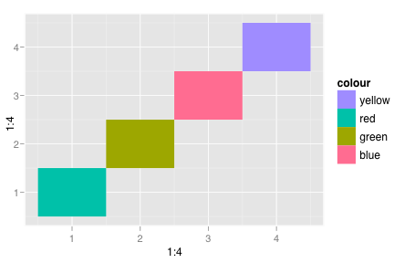
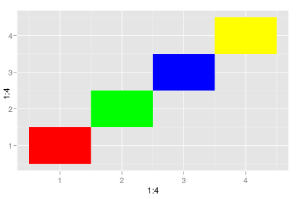
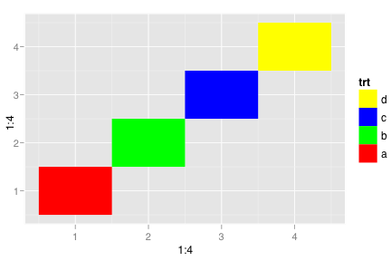
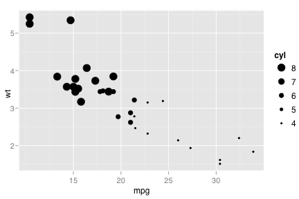
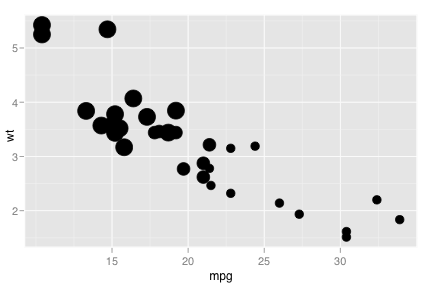

scale_manual
Manual scale, used when you want a direct mapping
Details
Examples
> colour <- c("red","green","blue","yellow") > qplot(1:4, 1:4, fill=colour, geom="tile")  > qplot(1:4, 1:4, fill=colour, geom="tile") + scale_fill_manual()  > > # To get a legend, you also need to supply the labels to > # be used on the legend, and the grob to draw them: > # grob_tile, grob_line, or grob_point > qplot(1:4, 1:4, fill=colour, geom="tile") + scale_fill_manual(labels=letters[1:4], grob="tile", name="trt")  > > # cyl scaled to appropriate size > qplot(mpg, wt, data=mtcars, size = cyl)  > > # cyl used as point size > qplot(mpg, wt, data=mtcars, size = cyl) + scale_size_manual()  >